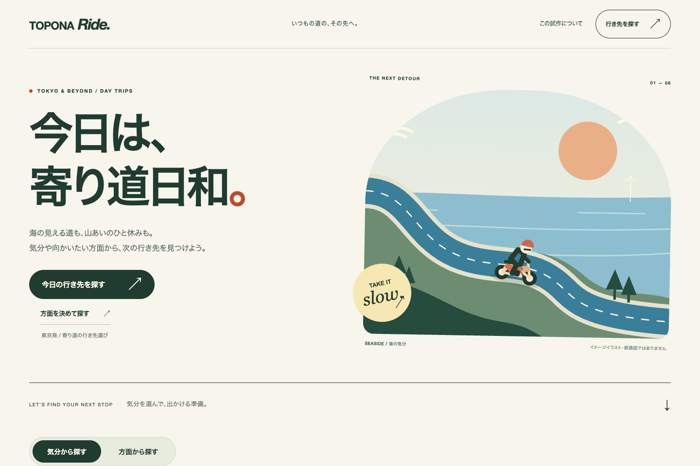

TOPONA RIDE / PUBLIC PROTOTYPE
TOPONA Rideを、
そのまま開けるように。
本体を一般公開しました。ログインやMacと同じWi-Fiへの接続は不要です。これまでの気分・距離検索と、方面から探す機能を使えます。
TOPONA Ride本体を開く駐車条件の根拠がある候補と、確認が残る地点を分けて表示する公開試作です。

01 / MOVIE
公開した画面と確認結果。
音声・日本語字幕付き。VOICEVOX:ずんだもん／ノーマル。
02 / CHECK
ログインせず、主要な操作を確認。

9方面から種類や気分を絞り、各スポットの詳しい情報、駐車条件を確認した根拠、体験記事、Google マップへのリンクを確認しました。元の検索へ戻っても候補は残ります。
公開後の確認範囲
ログインせず、スマホ・タブレット・パソコン相当の3種類の幅を確認。横にはみ出さず、主要な検索と詳細を開けました。
全52地点のうち駐車条件の根拠がある候補は18地点。34地点は保留です。道路距離・現在の二輪規制・正確な入口・お使いのバイクで利用できるかは未確認です。
実際のiPhoneでは、今回まだ操作を確認していません。地図やGoogle マップにはインターネット接続が必要です。
今回公開したのはTOPONA Rideです。道路工事・車線数マップや現地ノートの公開範囲は変えていません。